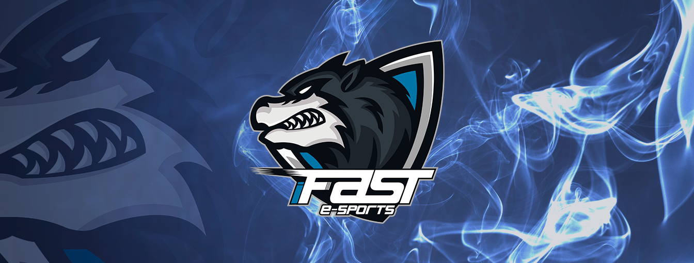

Foi no Crossfire em 26 de outubro de 2016 quando dois amigos resolveram criar um clã pra jogar com amigos e tudo mais, na diversão.
No entanto ambos queriam algo mais a sério, e resolveram entrar no amador de Crossfire participando de vários campeonato amador, mas com problemas na line up,e por conta de vários hackers no game, ‘Kenen’ dono da equipe resolveu parar com o cenário de CF.
investindo no Cenário de games com apoio de Danilo ‘N1lo’ Silveira, Leandro ‘Leco’ Cardoso e amigos, criando nossa Org e line nos Cenários de diversas modalidades CS/LOL/PUBG.
Estamos atualmente disputando o amador visando melhorar mais e mais.